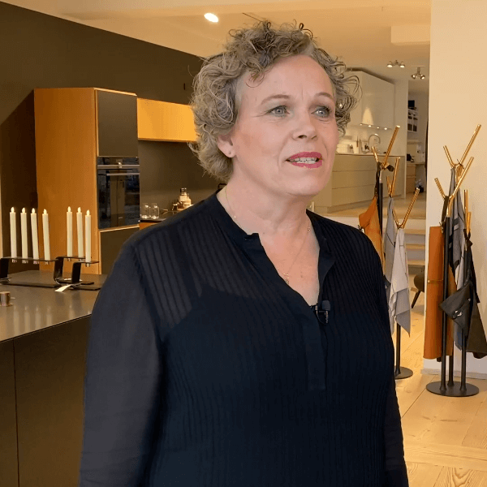
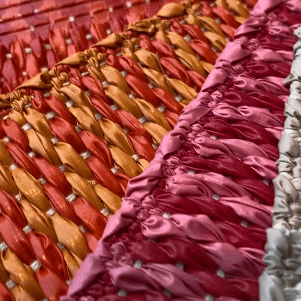
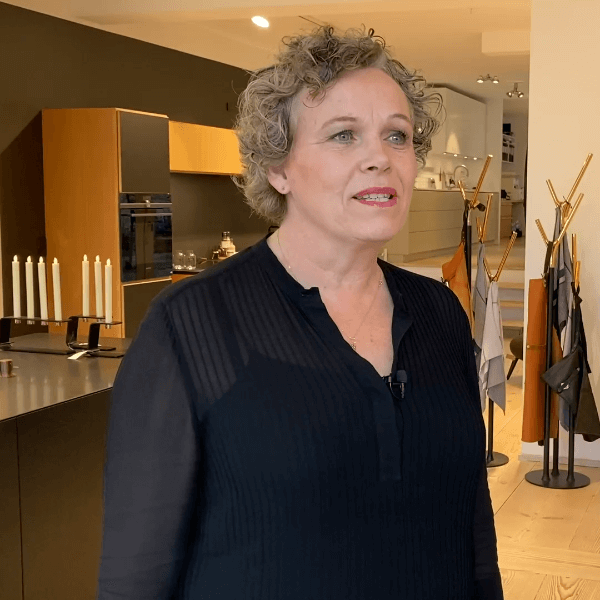
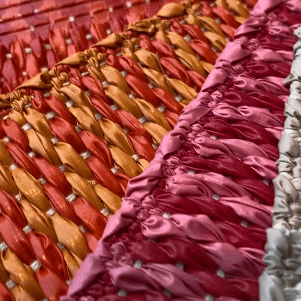

Video interview med Multiform
Vores opgave har været at lave et videointerview med en inspirerende person. Linea og jeg har valgt Charlotte Brix, der er indretningsarkitekt hos Multiform.
Vores opgave har været at lave et videointerview med en inspirerende person. Linea og jeg har valgt Charlotte Brix, der er indretningsarkitekt hos Multiform.

 



Inden optagelsen har vi overvejet videoens struktur. Vi har lavet en række spørgsmål samt noter til de klip, vi gerne vil optage.
Herefter har vi undersøgt hvilket udstyr, der passer til vores behov. Vi har fundet frem til:

Videoen er redigeret i Premiere Pro. Jeg har blandt andet arbejdet med lydbroer, b-rool, usynlig klipning, baggrundsmusik og grafisk opsætning af tekst.
Jeg har valgt at eksportere videoen i kvadratisk format, så den optager mere plads i Facebook-feedet end videoer i 9:16-format. Desuden er det kvadratiske format også mere velegnet til Instagram.
Du kan se den færdige video her.